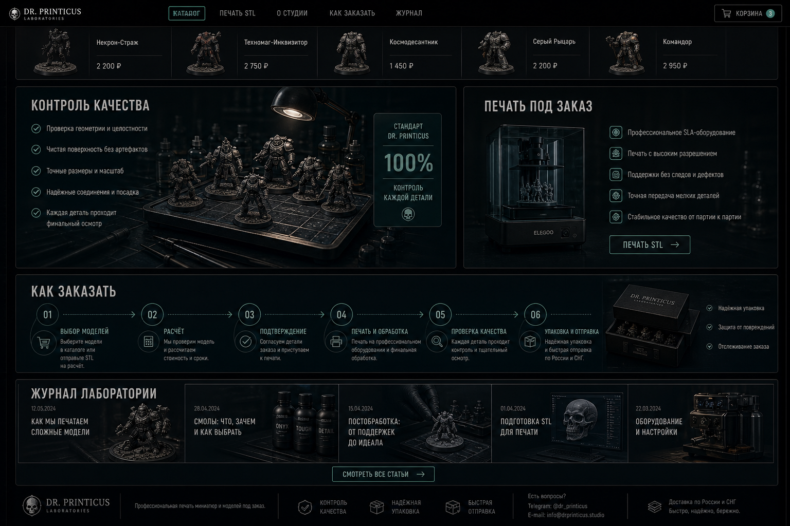
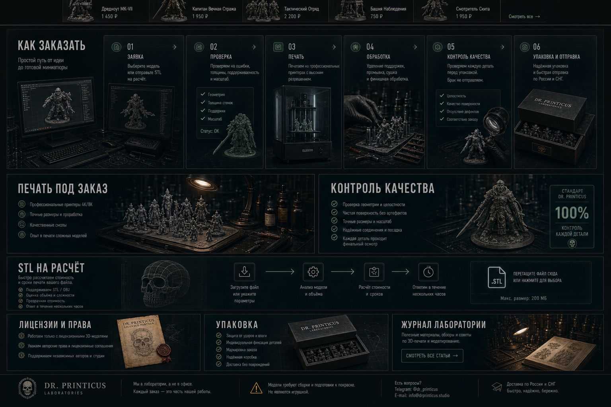
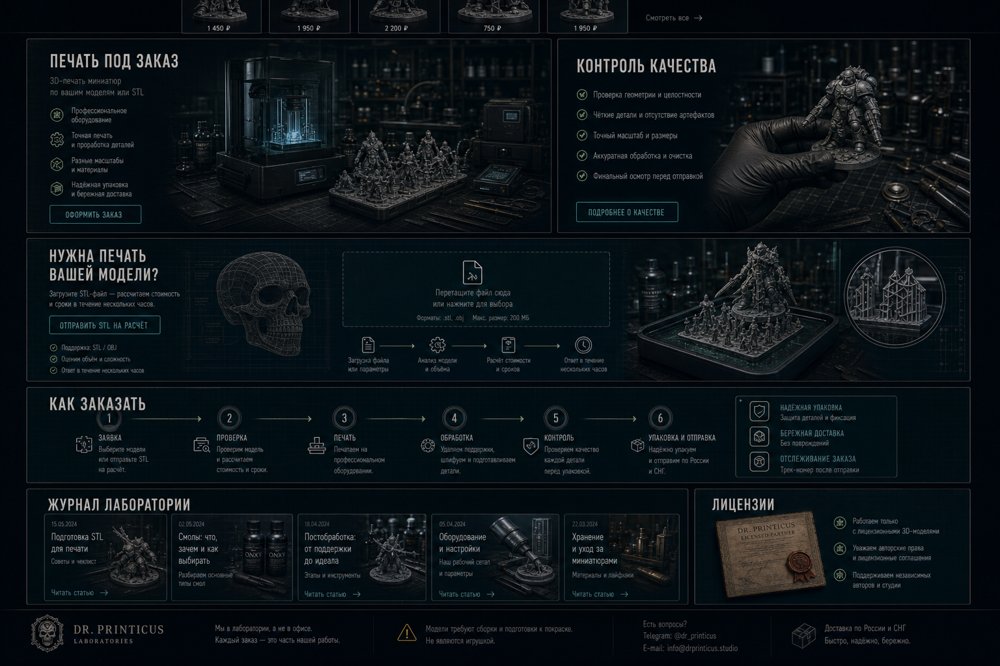

вариант G
Плотнее текущие секции
Минимальная смена композиции: секции ниже витрины становятся крупнее и длиннее.

Открыть картинкуhome design preview
Это не новый арт-дирекшн, а более спокойные варианты: сохраняем текущий стиль Dr. Printicus и меняем только ритм, высоту и насыщенность блоков ниже витрины.
вариант G
Минимальная смена композиции: секции ниже витрины становятся крупнее и длиннее.

Открыть картинкувариант H
Сохраняем стиль, но усиливаем блоки про заказ, STL, упаковку и контроль качества.

Открыть картинкувариант I
Компромисс: текущая подача, но ниже витрины больше высоты, медиа и визуального веса.

Открыть картинку